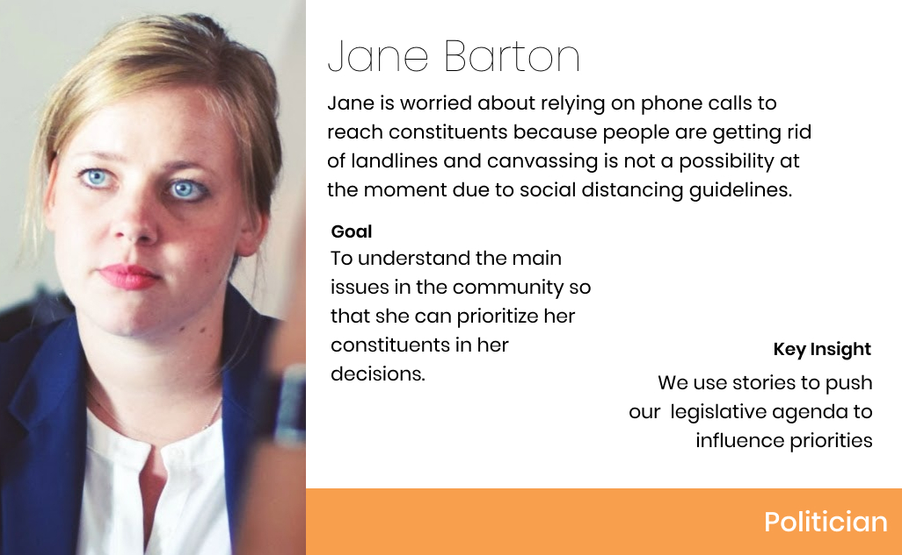
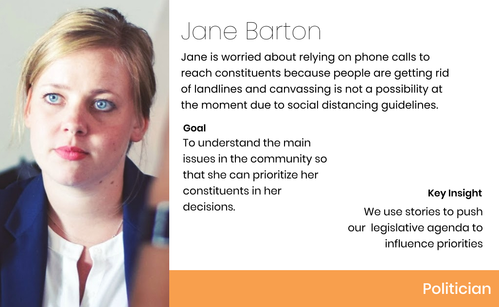
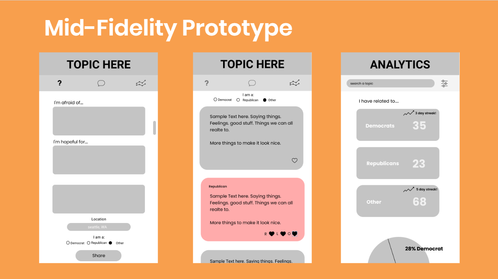

Common Ground
For the HCDE democracy design jam of 2020, we designed a mobile app called Common Ground. Common Ground is designed to combat the social divisions that were weaponized in the 2016 election It humanizes the “opposing side” by focusing on what people have in common, rather than political strategy. Politics have become increasingly polarized in recent years. In many ways, COVID-19 has deepened this political divide: Our team wondered: In a country divided by politics and physical isolation, how can people connect and find common ground with each other?
Interviews
We conducted 12 short interviews with:
- - 11 civilians and 1 politician.
- - 10 democrats, 1 republican and 1 radical
- - 9 women and 3 men
- - ages from early twenties to late sixties
Key Takeaways
- -"I feel alienated and being pushed to the corner because they [people of other beliefs] are so pushy and dominating.” - Civilian
- - “We use [constituent] stories to push our legislative agenda to influence priorities” -Politician
User Personas
From our interviews, we gathered key insights on our users that we compiled into categories such pain points, desires, and goals.
 

Protoypes
We tested a Mid fidelity prototype with users. Based on their feedback, we incorporated an authentication process into our app that allows users to sign in via other apps. This helps us to collect more accurate political data, while protecting the user’s anonymity.
Reflection
Because we had such a limited time frame to create this application, we did not get enough input from our users. For example, we were only able to interview one republican and one politician. In our future work, we would like to get a deeper understanding of our users. We are also planning to generate analytics into a report to be used by politicians. Lastly, we will implement a share function that will allow users to share a post to different social media platforms.